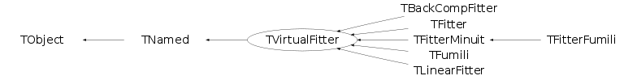

Function Members (Methods)
This is an abstract class, constructors will not be documented.
Look at the header to check for available constructors.
public:
| virtual | ~TVirtualFitter() |
| void | TObject::AbstractMethod(const char* method) const |
| virtual void | TObject::AppendPad(Option_t* option = "") |
| virtual void | TObject::Browse(TBrowser* b) |
| virtual Double_t | Chisquare(Int_t npar, Double_t* params) const |
| static TClass* | Class() |
| virtual const char* | TObject::ClassName() const |
| virtual void | Clear(Option_t* option = "") |
| virtual TObject* | TNamed::Clone(const char* newname = "") const |
| virtual Int_t | TNamed::Compare(const TObject* obj) const |
| virtual void | TNamed::Copy(TObject& named) const |
| virtual void | TObject::Delete(Option_t* option = "")MENU |
| virtual Int_t | TObject::DistancetoPrimitive(Int_t px, Int_t py) |
| virtual void | TObject::Draw(Option_t* option = "") |
| virtual void | TObject::DrawClass() constMENU |
| virtual TObject* | TObject::DrawClone(Option_t* option = "") constMENU |
| virtual void | TObject::Dump() constMENU |
| virtual void | TObject::Error(const char* method, const char* msgfmt) const |
| virtual void | TObject::Execute(const char* method, const char* params, Int_t* error = 0) |
| virtual void | TObject::Execute(TMethod* method, TObjArray* params, Int_t* error = 0) |
| virtual Int_t | ExecuteCommand(const char* command, Double_t* args, Int_t nargs) |
| virtual void | TObject::ExecuteEvent(Int_t event, Int_t px, Int_t py) |
| virtual void | TObject::Fatal(const char* method, const char* msgfmt) const |
| virtual void | TNamed::FillBuffer(char*& buffer) |
| virtual TObject* | TObject::FindObject(const char* name) const |
| virtual TObject* | TObject::FindObject(const TObject* obj) const |
| static TVirtualFitter* | Fitter(TObject* obj, Int_t maxpar = 25) |
| virtual void | FixParameter(Int_t ipar) |
| virtual void | GetConfidenceIntervals(TObject* obj, Double_t cl = 0.95) |
| virtual void | GetConfidenceIntervals(Int_t n, Int_t ndim, const Double_t* x, Double_t* ci, Double_t cl = 0.95) |
| virtual Double_t* | GetCovarianceMatrix() const |
| virtual Double_t | GetCovarianceMatrixElement(Int_t i, Int_t j) const |
| static const char* | GetDefaultFitter() |
| virtual Option_t* | TObject::GetDrawOption() const |
| static Long_t | TObject::GetDtorOnly() |
| static Double_t | GetErrorDef() |
| virtual Int_t | GetErrors(Int_t ipar, Double_t& eplus, Double_t& eminus, Double_t& eparab, Double_t& globcc) const |
| virtual TVirtualFitter::FCNFunc_t | GetFCN() |
| virtual Foption_t | GetFitOption() const |
| static TVirtualFitter* | GetFitter() |
| virtual const char* | TObject::GetIconName() const |
| static Int_t | GetMaxIterations() |
| TMethodCall* | GetMethodCall() const |
| virtual const char* | TNamed::GetName() const |
| virtual Int_t | GetNumberFreeParameters() const |
| virtual Int_t | GetNumberTotalParameters() const |
| virtual TObject* | GetObjectFit() const |
| virtual char* | TObject::GetObjectInfo(Int_t px, Int_t py) const |
| static Bool_t | TObject::GetObjectStat() |
| virtual Option_t* | TObject::GetOption() const |
| virtual Double_t | GetParameter(Int_t ipar) const |
| virtual Int_t | GetParameter(Int_t ipar, char* name, Double_t& value, Double_t& verr, Double_t& vlow, Double_t& vhigh) const |
| virtual Double_t | GetParError(Int_t ipar) const |
| virtual const char* | GetParName(Int_t ipar) const |
| static Double_t | GetPrecision() |
| virtual Int_t | GetStats(Double_t& amin, Double_t& edm, Double_t& errdef, Int_t& nvpar, Int_t& nparx) const |
| virtual Double_t | GetSumLog(Int_t i) |
| virtual const char* | TNamed::GetTitle() const |
| virtual UInt_t | TObject::GetUniqueID() const |
| virtual TObject* | GetUserFunc() const |
| virtual Int_t | GetXfirst() const |
| virtual Int_t | GetXlast() const |
| virtual Int_t | GetYfirst() const |
| virtual Int_t | GetYlast() const |
| virtual Int_t | GetZfirst() const |
| virtual Int_t | GetZlast() const |
| virtual Bool_t | TObject::HandleTimer(TTimer* timer) |
| virtual ULong_t | TNamed::Hash() const |
| virtual void | TObject::Info(const char* method, const char* msgfmt) const |
| virtual Bool_t | TObject::InheritsFrom(const char* classname) const |
| virtual Bool_t | TObject::InheritsFrom(const TClass* cl) const |
| virtual void | TObject::Inspect() constMENU |
| void | TObject::InvertBit(UInt_t f) |
| virtual TClass* | IsA() const |
| virtual Bool_t | TObject::IsEqual(const TObject* obj) const |
| virtual Bool_t | IsFixed(Int_t ipar) const |
| virtual Bool_t | TObject::IsFolder() const |
| Bool_t | TObject::IsOnHeap() const |
| virtual Bool_t | TNamed::IsSortable() const |
| Bool_t | TObject::IsZombie() const |
| virtual void | TNamed::ls(Option_t* option = "") const |
| void | TObject::MayNotUse(const char* method) const |
| virtual Bool_t | TObject::Notify() |
| void | TObject::Obsolete(const char* method, const char* asOfVers, const char* removedFromVers) const |
| static void | TObject::operator delete(void* ptr) |
| static void | TObject::operator delete(void* ptr, void* vp) |
| static void | TObject::operator delete[](void* ptr) |
| static void | TObject::operator delete[](void* ptr, void* vp) |
| void* | TObject::operator new(size_t sz) |
| void* | TObject::operator new(size_t sz, void* vp) |
| void* | TObject::operator new[](size_t sz) |
| void* | TObject::operator new[](size_t sz, void* vp) |
| virtual void | TObject::Paint(Option_t* option = "") |
| virtual void | TObject::Pop() |
| virtual void | TNamed::Print(Option_t* option = "") const |
| virtual void | PrintResults(Int_t level, Double_t amin) const |
| virtual Int_t | TObject::Read(const char* name) |
| virtual void | TObject::RecursiveRemove(TObject* obj) |
| virtual void | ReleaseParameter(Int_t ipar) |
| void | TObject::ResetBit(UInt_t f) |
| virtual void | TObject::SaveAs(const char* filename = "", Option_t* option = "") constMENU |
| virtual void | TObject::SavePrimitive(ostream& out, Option_t* option = "") |
| void | TObject::SetBit(UInt_t f) |
| void | TObject::SetBit(UInt_t f, Bool_t set) |
| virtual Double_t* | SetCache(Int_t npoints, Int_t psize) |
| static void | SetDefaultFitter(const char* name = "") |
| virtual void | TObject::SetDrawOption(Option_t* option = "")MENU |
| static void | TObject::SetDtorOnly(void* obj) |
| static void | SetErrorDef(Double_t errdef = 1) |
| virtual void | SetFCN(void* fcn) |
| virtual void | SetFCN(void (*)(Int_t&, Double_t*, Double_t&f, Double_t*, Int_t) fcn) |
| virtual void | SetFitMethod(const char* name) |
| virtual void | SetFitOption(Foption_t option) |
| static void | SetFitter(TVirtualFitter* fitter, Int_t maxpar = 25) |
| static void | SetMaxIterations(Int_t niter = 5000) |
| virtual void | TNamed::SetName(const char* name)MENU |
| virtual void | TNamed::SetNameTitle(const char* name, const char* title) |
| virtual void | SetObjectFit(TObject* obj) |
| static void | TObject::SetObjectStat(Bool_t stat) |
| virtual Int_t | SetParameter(Int_t ipar, const char* parname, Double_t value, Double_t verr, Double_t vlow, Double_t vhigh) |
| static void | SetPrecision(Double_t prec = 1e-6) |
| virtual void | TNamed::SetTitle(const char* title = "")MENU |
| virtual void | TObject::SetUniqueID(UInt_t uid) |
| virtual void | SetUserFunc(TObject* userfunc) |
| virtual void | SetXfirst(Int_t first) |
| virtual void | SetXlast(Int_t last) |
| virtual void | SetYfirst(Int_t first) |
| virtual void | SetYlast(Int_t last) |
| virtual void | SetZfirst(Int_t first) |
| virtual void | SetZlast(Int_t last) |
| virtual void | ShowMembers(TMemberInspector& insp) |
| virtual Int_t | TNamed::Sizeof() const |
| virtual void | Streamer(TBuffer& b) |
| void | StreamerNVirtual(TBuffer& b) |
| virtual void | TObject::SysError(const char* method, const char* msgfmt) const |
| Bool_t | TObject::TestBit(UInt_t f) const |
| Int_t | TObject::TestBits(UInt_t f) const |
| virtual void | TObject::UseCurrentStyle() |
| virtual void | TObject::Warning(const char* method, const char* msgfmt) const |
| virtual Int_t | TObject::Write(const char* name = 0, Int_t option = 0, Int_t bufsize = 0) |
| virtual Int_t | TObject::Write(const char* name = 0, Int_t option = 0, Int_t bufsize = 0) const |
protected:
| virtual void | TObject::DoError(int level, const char* location, const char* fmt, va_list va) const |
| void | TObject::MakeZombie() |
| TVirtualFitter& | operator=(const TVirtualFitter& tvf) |
Data Members
public:
| enum TObject::EStatusBits { | kCanDelete | |
| kMustCleanup | ||
| kObjInCanvas | ||
| kIsReferenced | ||
| kHasUUID | ||
| kCannotPick | ||
| kNoContextMenu | ||
| kInvalidObject | ||
| }; | ||
| enum TObject::[unnamed] { | kIsOnHeap | |
| kNotDeleted | ||
| kZombie | ||
| kBitMask | ||
| kSingleKey | ||
| kOverwrite | ||
| kWriteDelete | ||
| }; |
protected:
| Double_t* | fCache | [fCacheSize] array of points data (fNpoints*fPointSize < fCacheSize words) |
| Int_t | fCacheSize | Size of the fCache array |
| void | fFCN | |
| TMethodCall* | fMethodCall | Pointer to MethodCall in case of interpreted function |
| TString | TNamed::fName | object identifier |
| Int_t | fNpoints | Number of points to fit |
| TObject* | fObjectFit | pointer to object being fitted |
| Foption_t | fOption | struct with the fit options |
| Int_t | fPointSize | Number of words per point in the cache |
| TString | TNamed::fTitle | object title |
| TObject* | fUserFunc | pointer to user theoretical function (a TF1*) |
| Int_t | fXfirst | first bin on X axis |
| Int_t | fXlast | last bin on X axis |
| Int_t | fYfirst | first bin on Y axis |
| Int_t | fYlast | last bin on Y axis |
| Int_t | fZfirst | first bin on Z axis |
| Int_t | fZlast | last bin on Z axis |
| static TString | fgDefault | name of the default fitter ("Minuit","Fumili",etc) |
| static Double_t | fgErrorDef | Error definition (default=1) |
| static TVirtualFitter* | fgFitter | Current fitter (default TFitter) |
| static Int_t | fgMaxiter | Maximum number of iterations |
| static Int_t | fgMaxpar | Maximum number of fit parameters for current fitter |
| static Double_t | fgPrecision | maximum precision |
Class Charts
{kind=link}
{kind=link}
{kind=link}
{kind=link}

Function documentation
TVirtualFitter * Fitter(TObject* obj, Int_t maxpar = 25)
Static function returning a pointer to the current fitter. If the fitter does not exist, the default TFitter is created. Don't delete the returned fitter object, it will be re-used.
void GetConfidenceIntervals(Int_t n, Int_t ndim, const Double_t* x, Double_t* ci, Double_t cl = 0.95)
return confidence intervals in array x of dimension ndim implemented in TFitter and TLinearFitter
void GetConfidenceIntervals(TObject* obj, Double_t cl = 0.95)
return confidence intervals in TObject obj implemented in TFitter and TLinearFitter
Int_t GetMaxIterations()
static: Return the maximum number of iterations actually max number of function calls
void SetFitter(TVirtualFitter* fitter, Int_t maxpar = 25)
Static function to set an alternative fitter
void SetFCN(void (*fcn)(Int_t &, Double_t *, Double_t &f, Double_t *, Int_t))
To set the address of the minimization objective function called by the native compiler (see function below when called by CINT)
Double_t * SetCache(Int_t npoints, Int_t psize)
Initialize the cache array npoints is the number of points to be stored (or already stored) in the cache psize is the number of elements per point if (npoints*psize > fCacheSize) the existing cache is deleted and a new array is created. The function returns a pointer to the cache
void SetFCN(void* fcn)
To set the address of the minimization objective function
this function is called by CINT instead of the function above
void SetMaxIterations(Int_t niter = 5000)
static: Set the maximum number of function calls for the minimization algorithm For example for MIGRAD this is the maxcalls value passed as first argument (see http://wwwasdoc.web.cern.ch/wwwasdoc/minuit/node18.html )
void SetErrorDef(Double_t errdef = 1)
static: Set the Error Definition (default=1) For Minuit this is the value passed with the "SET ERR" command (see http://wwwasdoc.web.cern.ch/wwwasdoc/minuit/node18.html)
void SetPrecision(Double_t prec = 1e-6)
static: Set the tolerance used in the minimization algorithm For example for MIGRAD this is tolerance value passed as second argument (see http://wwwasdoc.web.cern.ch/wwwasdoc/minuit/node18.html )
Int_t ExecuteCommand(const char* command, Double_t* args, Int_t nargs)
void FixParameter(Int_t ipar)
Double_t * GetCovarianceMatrix() const
Double_t GetCovarianceMatrixElement(Int_t i, Int_t j) const
Int_t GetErrors(Int_t ipar, Double_t& eplus, Double_t& eminus, Double_t& eparab, Double_t& globcc) const
Int_t GetNumberTotalParameters() const
Int_t GetNumberFreeParameters() const
Double_t GetParError(Int_t ipar) const
Double_t GetParameter(Int_t ipar) const
Int_t GetParameter(Int_t ipar, char* name, Double_t& value, Double_t& verr, Double_t& vlow, Double_t& vhigh) const
const char * GetParName(Int_t ipar) const
void PrintResults(Int_t level, Double_t amin) const
void ReleaseParameter(Int_t ipar)
void SetFitMethod(const char* name)
Int_t SetParameter(Int_t ipar, const char* parname, Double_t value, Double_t verr, Double_t vlow, Double_t vhigh)